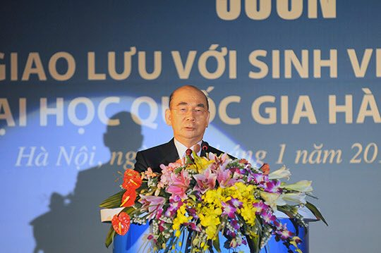
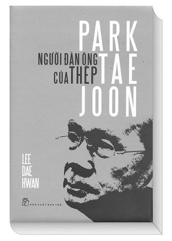

보도일 2015-06-19출처 조선일보 프리미엄조선 연재
<①편에서 계속>
2007년 6월 박태준은 세 번째로 베트남을 찾았다. 몇몇 동지들과 보름 일정으로 돌아볼 동남아, 홍콩, 중국 여행의 첫 기착지가 호찌민이었다. 베트남의 변화와 발전 양상에 대한 궁금증을 풀어보려는 방문이었다. 식사 때마다 그는 베트남의 독한 소주를 반주로 곁들였다. “아주 좋은 술”이라며 기분 좋게 여러 잔을 거푸 마시는 그의 모습은 아직 천진한 청년 같았다.
박태준이 2010년 1월 생애 네 번째로 베트남을 방문하여 하노이대우호텔에 묵는 목적은 베트남 쩨 출판사가 번역 출간한, 이대환이 쓴 평전 ‘철의 사나이 박태준’ 출판기념회 참석과 국립하노이대학 특별 강연이었다. 출판기념회는 1월 28일 저녁에 열렸고, 특별 강연은 이튿날 오전으로 잡혀 있었다.

1월 29일 오전 11시, 국립하노이대학 강당에는 총장과 보직 교수들, 오백여 대학생들이 앉아 있었다. 순차 통역으로 한 시간 넘게 진행된 박태준의 연설은 여든세 살의 노인이 아니라 현역 지도자처럼 패기와 열정이 넘쳐났으며, 베트남과 한국, 아니 세계의 청년을 향해 던지는 그의 정신이 응축돼 있었다. 그래서였을까. 젊은 청중은 강연을 마친 여든세 살의 노인을 향해 환호성을 지르고 열렬한 기립박수를 보냈다. 통역을 맡았던 여성 교수가 젖은 눈빛으로 조심스레 고백했다.
“빌 클린턴 전 미국 대통령, 장쩌민 전 중국 주석, 그리고 얼마 전에는 이명박 한국 대통령이 하노이대학에서 강연을 했고, 저는 그분들의 말씀을 경청했습니다. 그러나 박태준 선생의 강연처럼 저의 가슴을 울려주진 못했습니다.”

과연 박태준의 어떤 말들이 베트남 젊은 엘리트들의 영혼에 잔잔한 파문을 일으키고 푸른 가슴을 일렁이게 했을까? 그는 정열적으로 외쳤다.
“한 나라가 일어서는 과정에서 무엇보다도 중요한 전제조건은 지도층과 엘리트 계층이 부패하지 않고 확실한 비전을 제시하며 솔선수범으로 앞장서는 것입니다. 부패는 자기 영혼과의 부단한 싸움입니다. 인간은 땡볕의 생선처럼 부패하기 쉽습니다. 욕망이 그렇게 만드는 것입니다. 그러나 부패하지 않는 것은, 특히 지도층이나 권력자가 부패하지 않는 것은 자기 영혼이 저급한 욕망과의 부단한 싸움에서 승리한 것입니다.
젊은 엘리트 여러분에게 베트남의 미래가 달려 있습니다. 여러분은 호지명 선생의 청렴을 배워야 합니다. 그래야 지도자가 되었을 때, 권력자자 되었을 때 부패하지 않을 것이며, 그래야 베트남을 부강하고도 훌륭한 나라로 일으켜 세울 것입니다.”
박태준으로서는 그다지 특별한 말이 아니었다. 자신의 경험과 실천에서 우러나는 ‘살아 있는 말’이었다. 또한 그것은 박정희 앞에서 언제나 당당할 수 있는 자신의 참모습 그대로이기도 했다.